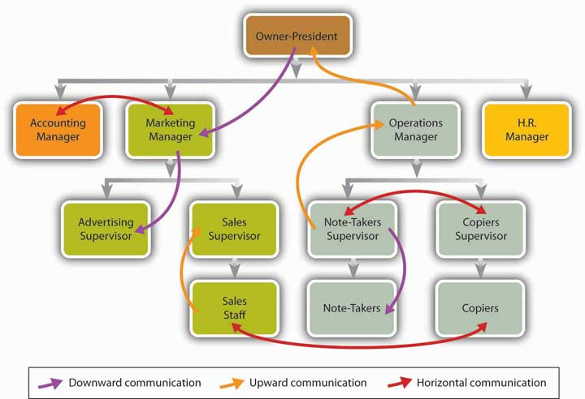
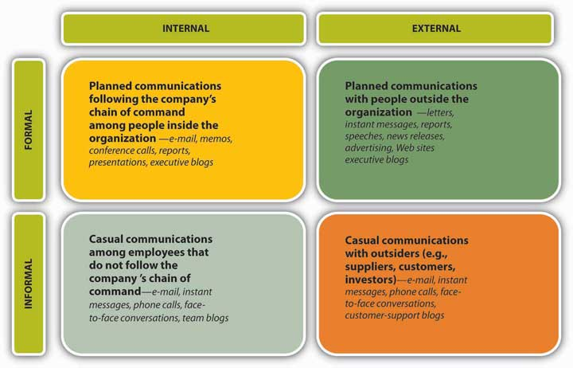
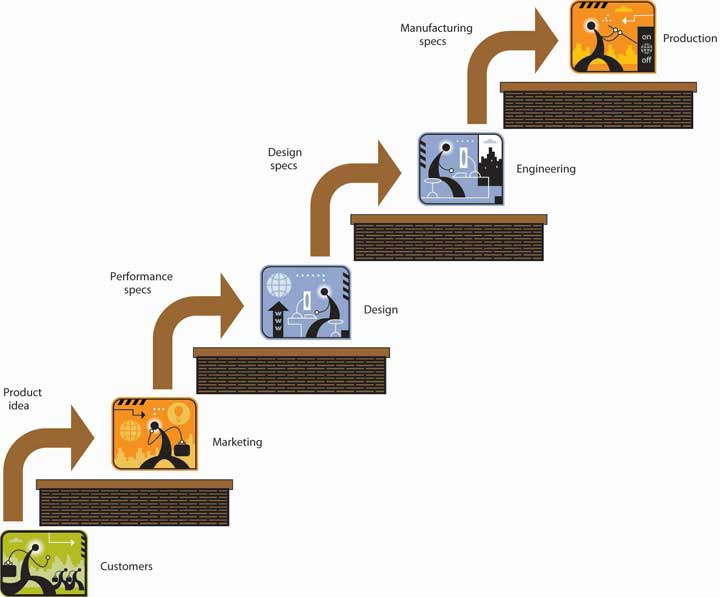

Clearly, the task of preparing and submitting a finished sales report doesn’t require the same kinds of communication skills as talking on the phone with a classmate. No matter what your “workstation” happens to be—whether your workplace office or your kitchen table—you’re performing the task of preparing that sales report in an organizational setting. You’re still a sender transferring information to a receiver, but the organizational context of the task requires you to consider different factors for success in communicating effectively (including barriers to success). A report, for example, must be targeted for someone in a specific position and must contain the information necessary to make a specific set of decisions.See Michael Netzley and Craig Snow, Guide to Report Writing (Upper Saddle River, NJ: Prentice Hall, 2002), 3–21.
Here’s another way of thinking about communication in an organizational setting. Let’s assume that you and the classmate you called on the phone are on roughly equal footing—you’re both juniors, your grades in the class are about the same, and so forth. Your phone conversation, therefore, is “lateral”: You belong to the same group (your accounting class), and your group activities take place on the same level.
Communication may also flow laterally in organizational settings (as it does between you and your classmate), but more often it flows up or down. Take a look at Figure 8.7 "Formal Communication Flows". If it looks familiar, that’s because we’ve borrowed it from Chapter 6 "Managing for Business Success", where it appeared as the organization chart for the fictional company Notes-4-You. As you can see, we’ve added a few lines to show the three directions in which communications can flow in a typical organization:This section is based on Jerald Greenberg and Robert A. Baron, Behavior in Organizations, 9th ed. (Upper Saddle River, NJ: Pearson Education, 2008), 351–53.
Your boss’s request for a sales report is an instance of downward communication, and when you’ve finished and submitted it, you will have completed a task of upward communication.
Figure 8.7 Formal Communication Flows
Naturally, each of these different directional flows has its functions and advantages. Downward communication, for example, is appropriate for giving instructions or directions—telling people what to do. (As a goal of communication, by the way, giving orders isn’t as one-sided as it may seem. One of the things that employees—the receivers—most want to know is: What, exactly, does my job entail?)Jerald Greenberg and Robert A. Baron, Behavior in Organizations, 9th ed. (Upper Saddle River, NJ: Pearson Education, 2008), 350–51. Like a sales report, upward communication usually provides managers with information that they need for making decisions, but it’s also the vehicle for new ideas, suggestions, and complaints. Horizontal communication supports efforts to coordinate tasks and otherwise help people work together.
And, of course, each type of flow has its disadvantages. As information seeps downward, for instance, it tends to lose some of its original clarity and often becomes distorted or downright wrong. (This is especially true when it’s delivered orally.) In addition, unlike Donald Trump, most people who are responsible for using downward communication don’t like delivering bad news (such as “You’re fired” or, more commonly, “Your job is being phased out”); as a result, bad news—including bad news that happens to be important news—is often ignored or disguised. The same thing may happen when bad news—say, a negative status report—must be sent upward.
Finally, while horizontal flows are valuable for promoting cooperation, they can also be used to engage in conflict—for instance, between two departments competing for the same organizational resources. The problem is especially bad when such horizontal communications breach official upward or downward lines of communication, thus bypassing managers who might be able to resolve the conflict.
Figure 8.8 "Channels of Communication" summarizes two additional sets of characteristics of organizational communication—internal and external channels and formal and informal channels.This section is based on John V. Thill and Courtland L. Bovée, Excellence in Business Communication, 8th ed. (Upper Saddle River, NJ: Pearson Education, 2008), 4–6. Internal communicationChannel by which communication is shared by people at all levels within a company. is shared by people at all levels within a company. External communicationChannel through which communication occurs between parties inside a company and parties outside it. occurs between parties inside a company and parties outside the company, such as suppliers, customers, and investors. Both internal and external forms of communication include everything from formal e-mail and official reports to face-to-face conversations and casual phone calls. External communication also takes such forms as customer and supplier Web sites, news releases, and advertising.
Figure 8.8 Channels of Communication
Note that Figure 8.8 "Channels of Communication" takes the form of a grid, thus creating four dimensions in which communication can take place. Informal communication, for example, can take place either among people within the company (internally) or between insiders and outsiders (externally). By and large, though you can use the same set of tools (memos, reports, phone calls) to communicate in any of these four situations, some tools (team blogs, news releases, supplier Web sites) are useful only in one or two.
An organization’s formal communication networkNetwork consisting of all communications that flow along an organization’s official lines of authority. consists of all communications that flow along its official lines of authority. Look again at Figure 8.7 "Formal Communication Flows". Because it incorporates the organization chart for Notes-4-You, it shows the company’s lines of authority—what, in Chapter 6 "Managing for Business Success", we called its reporting relationships. Here we can see that the reporting relationships in question consist of upward communication from subordinates to superiors. In reporting to the operations manager, for example, the notetakers’ supervisor communicates upward. Conversely, when the notetakers’ manager needs to give direction to notetakers, she will use downward communication. If the notetakers’ manager and the copiers’ manager must get together to prepare a joint report for the operations manager, they’ll engage in lateral communication. In short, an organization’s formal communication network is basically the same thing as its network of reporting relationships and lines of authority.See Jerald Greenberg and Robert A. Baron, Behavior in Organizations, 9th ed. (Upper Saddle River, NJ: Pearson Education, 2008), 349–50.
Every company also has an informal communication network (or grapevine)Network that carries information whenever two or more employees get together and start talking about the company and their jobs., which goes to work whenever two or more employees get together and start talking about the company and their jobs. Informal communication can take place just about anywhere (in one person’s cubicle, in the cafeteria, on the golf course) and by just about any means (phone, e-mail, instant messaging, face-to-face conversation).
Though it’s sometimes called the grapevine, an informal network is an extremely important communication channel. Why? For the simple reason that it’s typically widespread and can rarely be prevented, even if it’s not officially sanctioned by the company—indeed, even when the company tries to discourage or bypass it. Unofficial information crosses virtually every boundary drawn by a firm’s organization chart, reaching out and touching everyone in the organization, and what’s more, it travels a lot faster than official information.
The downside of “unofficial” information should be obvious. Because much of it is communicated orally, it’s likely to get distorted and often degenerates into outright misinformation. Say, for example, that a rumor about layoffs gets started in your workplace. As more than one manager will verify, such rumors can do more damage than the reality. Morale may plummet and productivity won’t be far behind. Valuable employees may abandon ship (needlessly, if the rumors are false).See Steven A. Watson, “Sharing Info and Defusing Rumors Helps Keep Staff Motivated During Layoffs,” ZDNet, July 29, 2003, http://www.zdnetasia.com/sharing-info-and-defusing-rumors-helps-keep-staff-motivated-during-layoffs-39140816.htm (accessed October 11, 2011).
And imagine what can happen if informal information gets outside the organization. In the 1970s, Chicago-area McDonald’s outlets found themselves fighting rumors about worms in their hamburgers. Over the years, Coca-Cola has had to fight rumors about terrorists joining its organization, subversive messages concealed in its label, and hyperacidity (false rumors that Coke causes osteoporosis and makes a good pesticide and an equally good spermicide).Allan J. Kimmel, Rumors and Rumor Control (Mahwah, NJ: Erlbaum, 2004), http://books.google.com/books?id=a0FZz3Jq8lIC&pg=PA64&lpg=PA64&dq=rumors+about+Coke&source=web &ots=wtBktafiKZ&sig=HbsDm2Byd0ZPkZH2YUWITwWTDac&hl=en&sa=X&oi=book_ result&resnum=6&ct=result (accessed October 11, 2011). See also Jerald Greenberg and Robert A. Baron, Behavior in Organizations, 9th ed. (Upper Saddle River, NJ: Pearson Education, 2008), 359.
On the upside, savvy managers can tap into the informal network, either to find out what sort of information is influencing employee activities or to circulate more meaningful information, including new ideas as well as corrective information. In any case, managers have to deal with the grapevine, and one manager has compiled a list of suggestions for doing so effectively:Charles R. McConnell, “Controlling the Grapevine,” Small Business Toolbox, June 18, 2008, http://www.nfib.com/object/IO_37650?_templateId=315 (accessed September 6, 2008).
Perhaps most importantly, when alert managers notice that the grapevine is particularly active, they tend to reach a sensible twofold conclusion:
Let’s go back to our example of a workplace overwhelmed by layoff rumors. In a practical sense, what can a manager—say, the leader of a long-term product-development team—do to provide better communication? One manager suggests at least three specific responses:Steven A. Watson, “Sharing Info and Defusing Rumors Helps Keep Staff Motivated During Layoffs,” TechRepublic, June 17, 2003, http://articles.techrepublic.com.com/5100-10878_11-5035116.html (accessed September 6, 2008).
Because actions of this sort send a message, they can legitimately be characterized as a form of formal communication. They also reflect good leadership: Even though the information in this case relates only indirectly to immediate team tasks, you’re sharing information with people who need it, and you’re demonstrating integrity (you’re being honest, and you’re following through on a commitment to the team).
By barriers we mean anything that prevents people from communicating as effectively as possible. Noise, for example, can be a barrier to communication; if you and other team members are mumbling among yourselves while your team leader is trying to explain task assignments, you’re putting up a barrier to group communication. As a matter of fact, you’re putting up two barriers: In addition to creating noise, you’re failing to listen. About 80 percent of top executives say that learning to listen is the most important skill in getting things done in the workplace,John V. Thill and Courtland L. Bovée, Excellence in Business Communication, 8th ed. (Upper Saddle River, NJ: Pearson Education, 2008), 53. See Judi Brownell, Listening, 2nd ed. (Boston: Allyn & Bacon, 2002), 9–10. and as President Calvin Coolidge once remarked, “No man ever listened himself out of a job.” Business people who don’t listen risk offending others or misinterpreting what they’re saying.
As for creating unnecessary verbal noise and failing to listen, we can probably chalk them up to poor communication habits (or maybe the same habit, for as legendary management expert Peter Drucker argues, “Listening is not a skill; it is a discipline. All you have to do is keep your mouth shut”). In the rest of this section, we’ll overlook personal barriers to communication and concentrate instead on two types of barriers that are encountered by groups of people, sometimes large and sometimes small, working toward organizational goals.
Cultural barriersBarriers that result from differences among people of different cultures., which are sometimes called cultural filters, are the barriers that result from differences among people of different cultures.See Melinda G. Kramer, Business Communication in Context: Principles and Practice (Upper Saddle River, NJ: Prentice Hall, 2001), 87. As we point out in Chapter 7 "Recruiting, Motivating, and Keeping Quality Employees", experts and managers agree that cultural diversity in the workplace can and should be a significant asset: It broadens the perspectives from which groups approach problems, gives them fresh ideas, and sparks their creativity; it also gives organizations an advantage in connecting with diverse customer bases. None of these advantages, though, magically appears simply because workplace diversity increases. To the contrary: As diversity increases, so does the possibility that a group will be composed of people who have different attitudes and different ways of expressing them.
If it hasn’t happened already, for example, one of these days you’ll find yourself having a work-related conversation with a member of the opposite sex. If the conversation doesn’t go as smoothly as you’d expected, there’s a good reason: Men and women in the workplace don’t communicate the same way. According to American linguist Deborah Tannen, men tend to assert their status, to exert confidence, and to regard asking questions as a sign of weakness. Women, in contrast, tend to foster positive interrelationships, to restrain expressions of confidence, and to ask questions with no trouble.See Jerald Greenberg and Robert A. Baron, Behavior in Organizations, 9th ed. (Upper Saddle River, NJ: Pearson Education, 2008), 360–61. See Deborah Tannen, Talking 9 to 5: Women and Men at Work (New York: Avon, 1995).
It really doesn’t matter which “style” (if either) is better suited to making a conversation more productive. Two points, however, are clear:
Let’s return for a moment to Figure 8.7 "Formal Communication Flows". Recall that when we introduced the organizational structure of Notes-4-You in Chapter 6 "Managing for Business Success", we characterized it as a functional organization—one that groups together people who have comparable skills and perform similar tasks. Note, however, that in setting up this form of organization for our hypothetical company, we found it necessary to insert two layers of management (four functional managers and two job supervisors) between our owner/president and our lowest-level employees. In this respect, our structure shares certain characteristics with another form of organization—divisional, which groups people into units that are more or less self-contained and that are largely accountable for their own performance.
What does all this have to do with barriers to communication? Simply this: The more “divisionalized” an organization becomes, the more likely it will be to encounter communication barriers. Not surprisingly, communication gets more complicated, for the same reason that an organization comes to rely on more levels of management.See Jennifer M. George and Gareth R. Jones, Understanding and Managing Organizational Behavior, 5th ed. (Upper Saddle River, NJ: Pearson Education, 2008), 544. Notes-4-You, for instance, needs two supervisors because its notetakers don’t do the same work as its copiers. In addition, because their groups don’t perform the same work, the two supervisors don’t call on the same resources from the company’s four functional managers. (Likewise, Notes-4-You also has four functional-area managers because none of them does the same work as any of the others.)
Officially, then, the operations of the two work groups remain distinct or specialized. At the same time, each group must contribute to the company-wide effort to achieve common goals. Moreover, certain organizational projects, like Motorola’s cell phone project, may require the two groups to work together more closely than usual. When that happens, employees from each of the two groups may find themselves working together on the same team, but even so, one crucial fact remains: Information that one group possesses and the other doesn’t must still be exchanged among team members. It may not be quite as apparent as the cultural diversity among men and women in many workplace situations, but there is in fact a functional diversity at Notes-4-You among notetakers and copiers.See Anne S. Tsui and Barbara A. Gutek, Demographic Differences in Organizations (Lanham, MD: Lexington Books, 1999), 91–95, http://books.google.com/books?hl=en&id=Rr8jYPKF0hoC&dq=Tsui%2BGutek&printsec=frontcover &source=web&ots=svMB027a6s&sig=pQForzFKUkbWr1HbNBBLE42EoL0&sa= X&oi=book_result&resnum=1&ct=result (accessed September 9, 2008).
Figure 8.10 "Functional Barriers to Communication" illustrates the location of barriers that may be present when a team-based project must deal with a certain degree of functional diversity. As you can see, we’ve modeled our process on the process of the Motorola ultratrim phone project.See Roberta S. Russell and Bernard W. Taylor, Operations Management, 5th ed. (Hoboken, NJ: Wiley, 2005), 85. We don’t need to describe the entire process in detail, but we will focus on two aspects of it that we’ve highlighted in the drawing:
If, for example, marketing specs called for the new Motorola phone to change colors with the user’s mood, someone in engineering might have to explain the difficulties in designing the software. If design specs called for quadraphonic sound, production might have to explain the difficulties in procuring sufficiently lightweight speaker components.
Figure 8.10 Functional Barriers to Communication
Each technical problem—each problem that arises because of differences in team members’ knowledge and expertise—becomes a problem in communication. In addition, communicating as a member of a team obviously requires much more than explaining the limitations of someone else’s professional expertise. Once they’ve surfaced, technical and other problems have to be resolved—a process that will inevitably require even more communication. As we’ve seen in this part of the chapter, improving communication is a top priority for most organizations (for one thing, developing a team-based environment is otherwise impossible), and the ongoing task of improving communication is pretty much the same thing as the ongoing task of overcoming barriers to it.
In a typical organizational setting, communication flows may take three directions:
(AACSB) Analysis
Write three messages (you decide which communication channel to use):